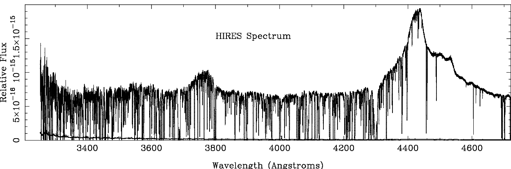
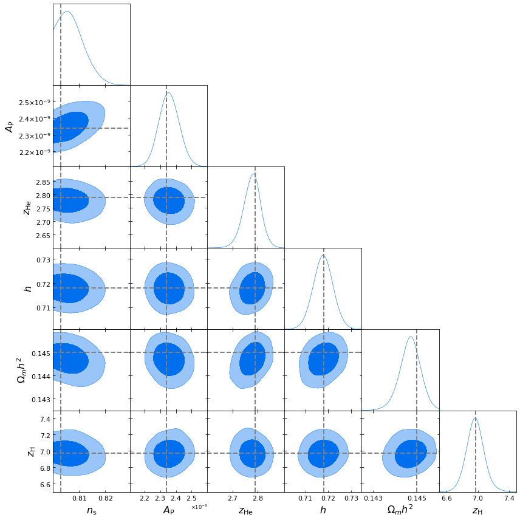

lyman-α forest emulator
The Lyman-α forest is a series of absorption features in the spectrum of quasars. As light travels from the quasar towards us, two effects combine to create the observed forest: the expansion of the universe redshifts the spectrum, and these redshifted photons are absorbed and scattered by hydrogen in the intergalactic medium (IGM). Since overdensities will absorb more photons, the Lyman-α forest is effectively a one-dimensional density map along the line of sight.
The figure below is an example of the observed Lyman-α forest, from O'Meara et al. APJ 552 718, arXiv: 0011179.

In addition to probing structure, the Lyman-α forest can be used to characterize the IGM thermal and ionization history (the epoch of reionization). In turn, this can be used to test the sources of background ionizing radiation and ultimately tell us about early stars and galaxies. However, because Lyman-α forest observations probe non-linearities (the overdensities along the line of sight), simulations are required to interpret observations.
Below is the dark matter structure (left) and gas temperature (right) for a simulation aimed at probing the Lyman-α forest.

Furthermore, to fully exploit the Lyman-α forest requires a suite of simulations with varying astrophysical and cosmological parameters. This requires many high resolution simulations, which can be very costly in computational resources.
To get around this computational bottleneck, I am building a Gaussian process emulator for the Lyman-α forest flux power spectrum. An emulator is a machine learning method that can be trained using relatively few simulations to predict other simulations without having to run them. It is a stochastic process that interpolates between simulation outputs (in this case, the flux power spectrum) for a range of inputs.
The figure here shows an example of a Markov Chain Monte Carlo analysis using a test emulator. The posterior probability is shown for a set of cosmological and astrophysical parameters. In this case, the 'observation' was actually another simulation, and the correct parameters are shown with the dashed lines.